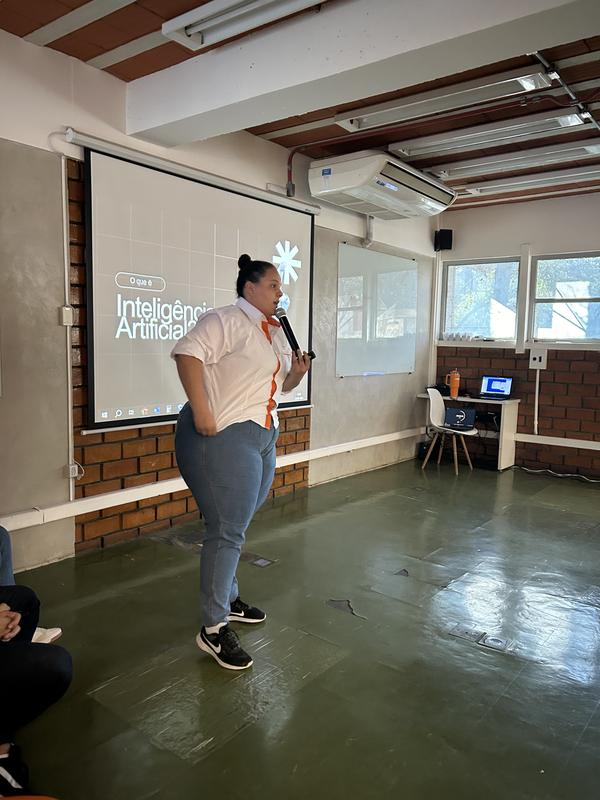
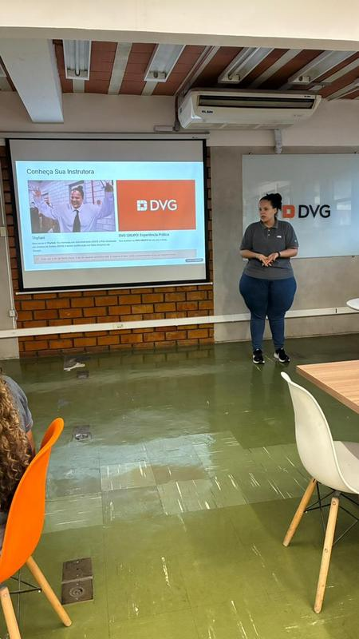
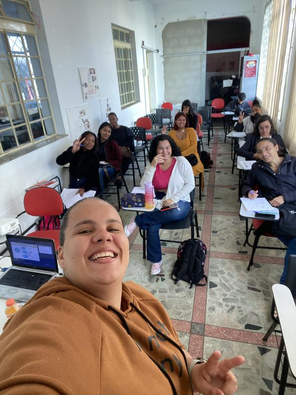
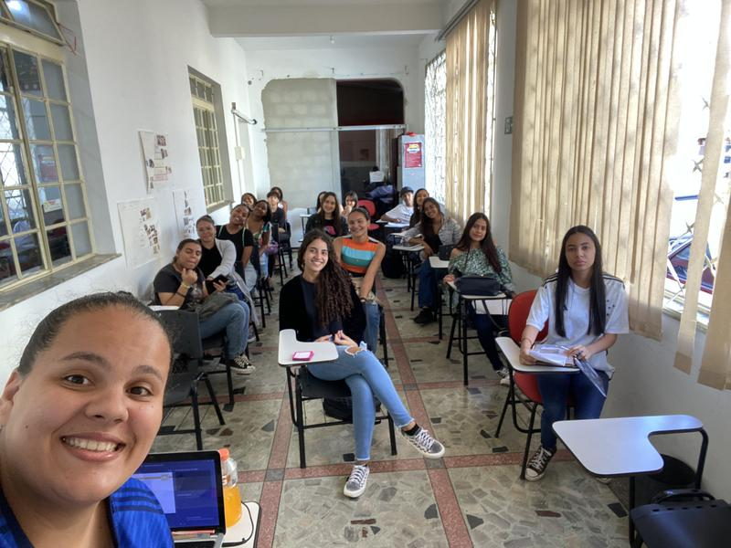
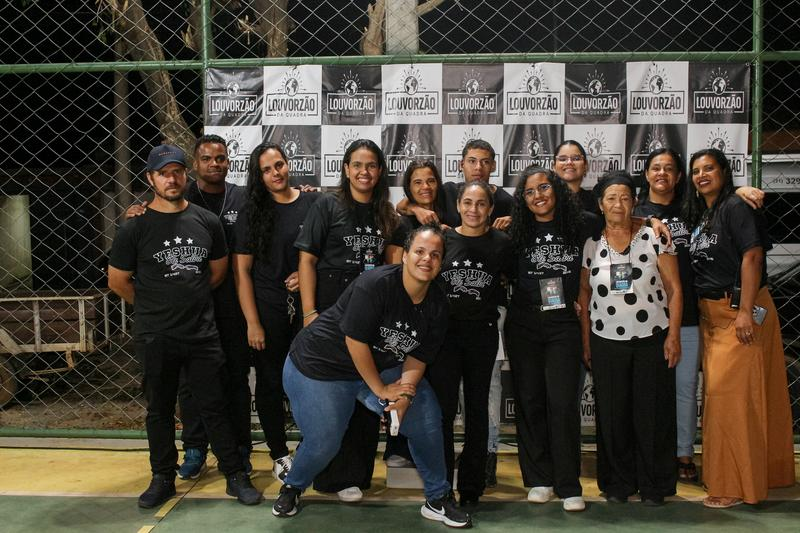

Dados fazem mais sentido quando a gente entende o que existe por trás deles.
Eu comecei pela Administração e encontrei nos dados uma forma de investigar problemas, organizar caminhos e ajudar pessoas a decidirem melhor.
Sou Thyfani Xavier. Minha trajetória começou na Administração, passou por processos e gestão e, há mais de 3 anos, ganhou um novo centro: os dados.
Gosto de entender como uma informação nasce, por onde ela passa e o que precisa acontecer para virar uma decisão confiável. Por isso, meu trabalho costuma atravessar o caminho inteiro: SQL e SSIS, tratamento, modelagem, Power BI e, cada vez mais, IA aplicada.
Também gosto de dividir o que aprendo. Já conduzi workshops de IA e Excel, dei aulas de Administração e escrevo sobre dados sem transformar assunto complexo em conversa complicada.
Conhecimento também se compartilha





Como eu trabalho
“Nem todos os que vagam estão perdidos.”— J. R. R. Tolkien